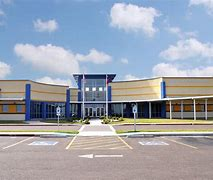
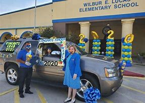
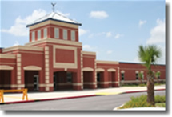

Valley View Elementary Schools

Valley View Elementary
Valley View Elementary School is a public elementary school in Hidalgo. The principal of Valley View Elementary School is MR JESUS CERDA. 80% of the Valley View Elementary School students are "limited in English proficiency." 460 children attend Valley View Elementary School, and the ratio of students to teachers is 14:1.

Valley View North
Valley View North Elementary School is a public elementary school in Pharr. The principal of Valley View North Elementary School is MRS MARINA LEAL. 85% of the Valley View North Elementary School students are "limited in English proficiency." 516 students go to Valley View North Elementary School, and the ratio of students to teachers is 12:1.

Lucas Elementary
The principal of Wilbur E Lucas Elementary School is Rosemarie Gomez. 82% of the Wilbur E Lucas Elementary School students are "limited in English proficiency." 422 children attend Wilbur E Lucas Elementary School, and the ratio of students to teachers is 14:1. Valley View South Elementary School is one of the nearest elementary schools.

Valley View South
This elementary school has a total enrollment of 581 studentswith approximately 39 full-time teachers. It has a student to teacher ratio of about 15 students per teacher. The average student-teacher ratio for Hidalgo Countyis 15 to 1. Title I Eligible4
Statistics
- Students: 1,979
- Teachers: 144